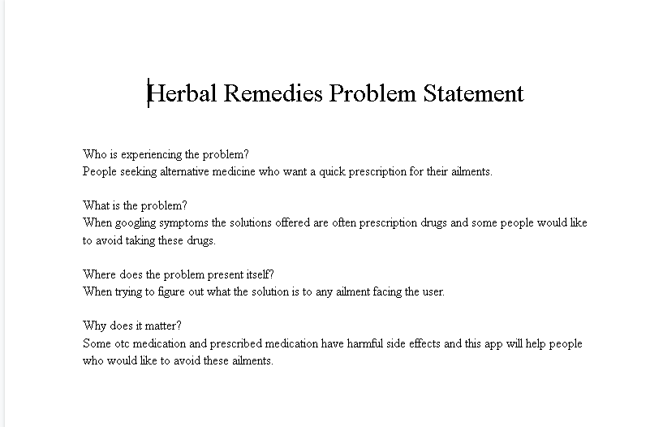
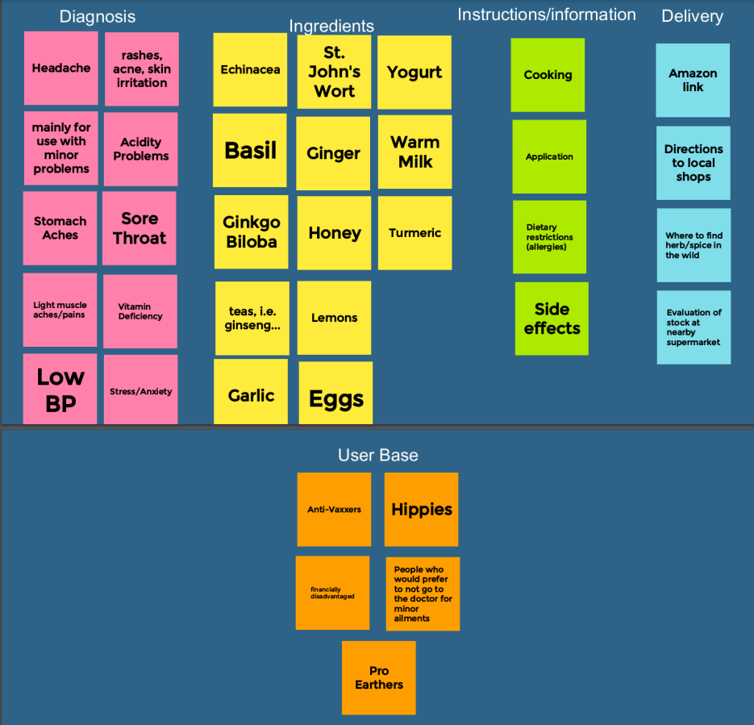
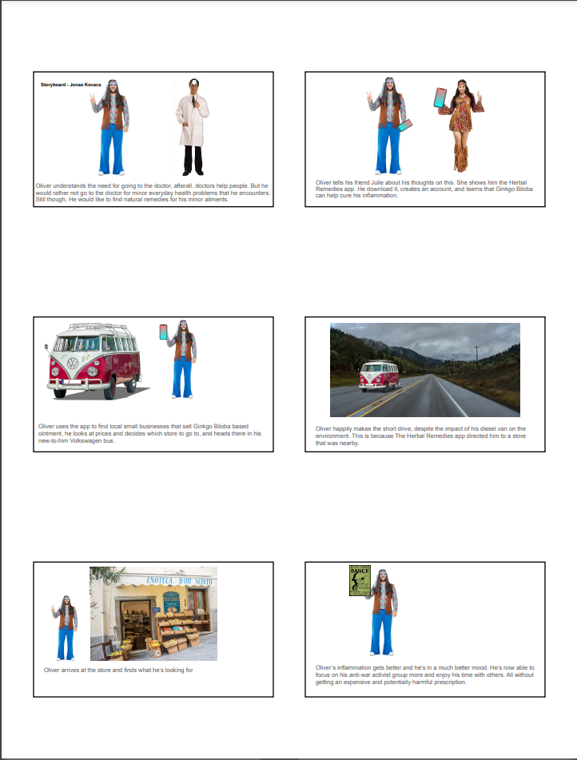
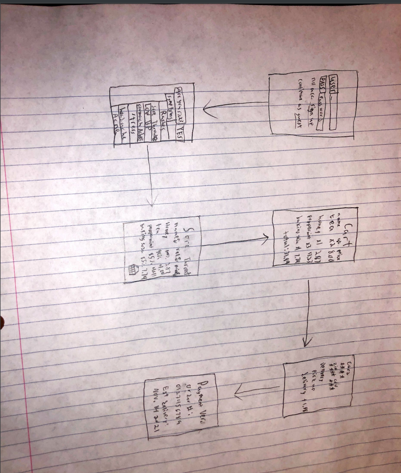
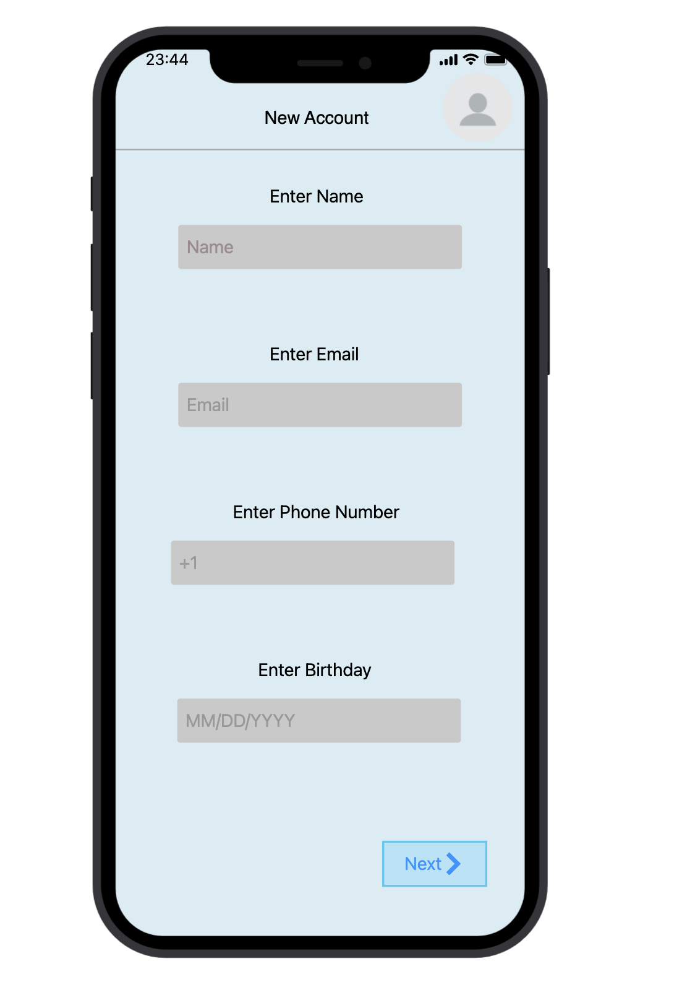

When googling symptoms the solutions offered are often prescription drugs and some people would like to avoid taking these drugs.

Topics: Diagnosis, Ingredients, Instructions, Information, Delivery, User Base

Topics: Diagnosis, Ingredients, Instructions, Information, Delivery, User Base

Rough Ideas of how the application may look

A scene and tasks and the result of usability tests